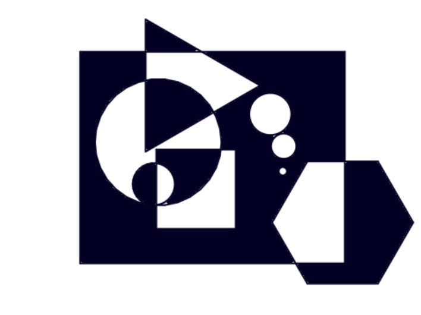
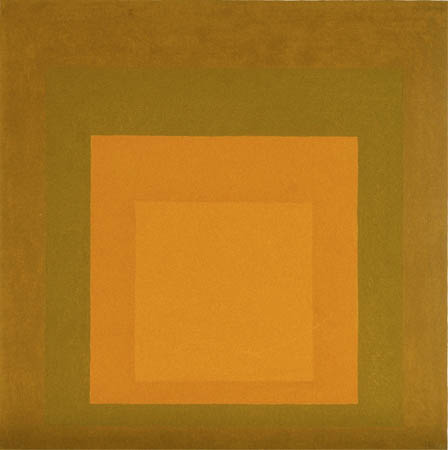
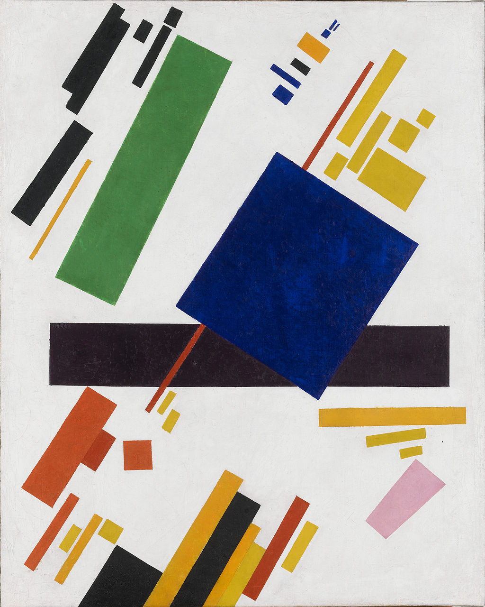
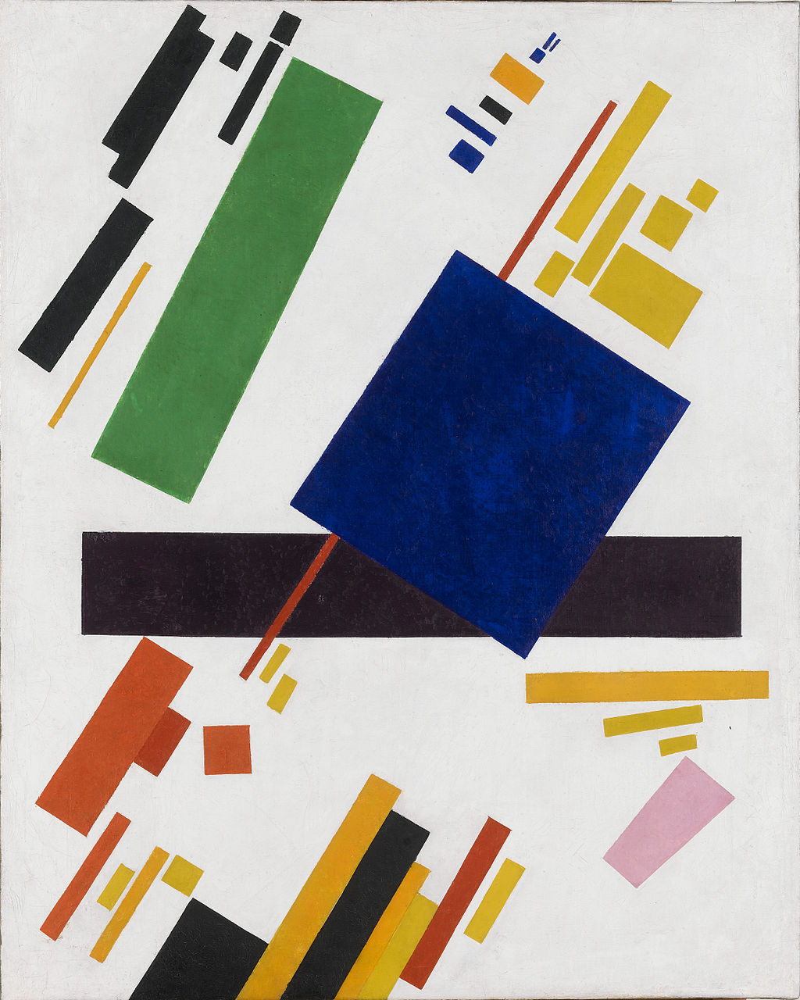
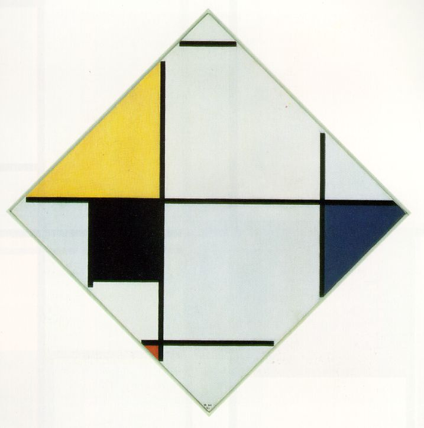
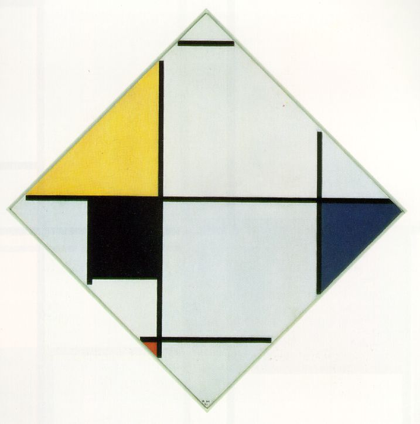

Grafische ontwerpen
Op deze pagina ga je blokken maken en gebruiken waarmee je kunstige veelhoeken, cirkels en sterren kan ontwerpen.

- Als je het nog niet gedaan hebt, bouw een blok om een normale veelhoek te tekenen, met een bepaald
aantal kanten en een bepaalde kantlengte.
- Je kunt ook een blok maken om meteen een rechthoek te tekenen met invoer voor lengte en
breedte.
- Plaats in het werkblad een verzameling van blokken die je wil gebruiken om een nieuw ontwerp
te maken. Je kan de invoerwaardes van de blokken naar eigen inzicht aanpassen
terwijl je je ontwerp maakt.
Deze video laat zien hoe je overlappende gebieden maakt en deze met een kleur vult.
- Maak je eigen ontwerp. Probeer verschillende combinaties van vormen en kleuren. Maak een screenshot
van je kunstwerk en deel het met anderen op het web.
Debuggen met
Je kan zeg .. gedurende .. gebruiken om informatie over de werking van je programma te
krijgen tijdens het uitvoeren. Onderstaande video laat je zien hoe zeg ..
gedurende ..blokken gebruikt om het probleem te vinden in het script dat een
rechthoek gaat tekenen. Het blok zorgt dat het programma pauzeert en
informatie geeft over wat het aan het doen is. Zo kan je
de bron van een fout heel precies opsporen.
 met een ander paar.
met een ander paar.
- Zoek werk op van kunstenaars zoals Josef Albers,
Maya Hayuk, Wassily
Kandinsky, Atta Kwami, Kazimir
Malevich, Carlos Merida, Piet Mondriaan,
Alma Thomas en
Theo van
Doesburg om inspiratie op te doen voor nieuwe ontwerpen in je eigen stijl.



 

 



- Hieronder staan een paar ideeën die 'willekeur' (randomness) toevoegen aan de rangschikking van kleur en vorm.
Maak je eigen ontwerp waarin willekeur een rol speelt.
Dit is een van de manieren om willekeur aan je ontwerp toe te voegen:


- Je kan het veelhoekblok aanpassen om sterren te maken die je in je ontwerp kunt gebruiken.
- Gebruik wat je al weet om een vlag te tekenen die je mooi vindt.
- Experimenteer met twee soorten zevenpuntige sterren

- Probeer erachter te komen hoe je het
sterblok kunt aanpassen zodat het allebei de soorten kan tekenen. (Je moet hiervoor nog een invoer toevoegen.) - Is er een derde soort zeven-puntige ster? Waarom of waarom niet? Bespreek het met je partner.
- Hoeveel soorten negen-puntige sterren kan je maken? Teken ze allemaal met je
sterblok. - Hoeveel soorten zes-puntige sterren zijn er? Teken een zes-puntige ster op papier, probeer
het daarna met je
sterblok. Leg het resultaat uit. - Hoeveel soorten acht-puntige sterren kan je maken?
- Werk met je partner om een algemene stertheorie te bedenken, zodat je het aantal soorten 98-puntige sterren kan voorspellen zonder dat je ze allemaal hoeft te tekenen.
- Probeer erachter te komen hoe je het